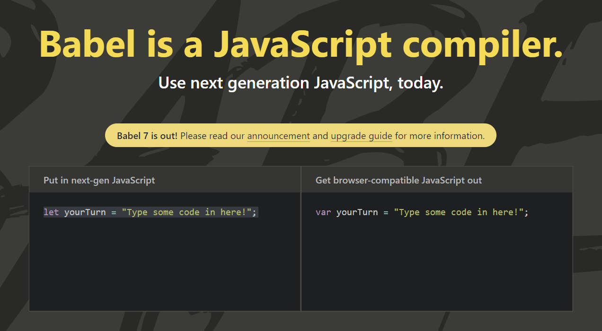

Modern JS: Babel Configuration
Open babel.html for the markup/code | Images are taken from: JS Course by Jonas Schmedtmann
When we open Babel JS' Official Homepage, it says: Babel is a JavaScript Compiler.

We can always dive into the Documentation of Babel to setup
Babel. In order for our project to include Babel, we need to download a couple of packages.
The packages that we need to install for Babel to work are: @babel/core,
@babel/preset-env (which will convert all the modern JS code back to ES5 code),
babel-loader (needed by Webpack in order to load Babel files). We install them using the
npm command line where we save them as devDependencies in our project as shown below.
(Command: npm install @babel/core @babel/preset-env babel-loader --save-dev. Note that we can install multiple packages using a single npm install ... command)
We can check our package.json file to check what's new inside "devDependencies"
field.
Coming back to Webpack, we know that Webpack has four core concepts which are
entry points, output, plugins &
loaders. Loaders in Webpack allow us to import/load all kinds of
different files, and more importantly, to also process them. Like converting Sass to CSS code, or
converting ES6 to ES5 code, (which is exactly what we want from setting up Babel) and for that we need
the Babel Loader because Babel is the tool that converts ES6+ code to ES5 for backward compatibility
reasons. The syntax to include Babel into our project along with Webpack is a bit weird.
What we do is, in the Webpack Configuration file (which is webpack.config.js), inside the
module.exports object, we define a new property named module, which is an
object, in which we specify the rules property. rules property receives an
array of all of the loaders that we want to use in our project. For each of the loader that the
rules property takes in its array, it is to be passed as an object. Inside the respective
loader object, we need a property called test which takes in a
regular expression (aka regex). In our particular case, for the regex
we will test all the files that end with '.js', because we want to convert all our code written in
the JavaScript files (which is ES6+) to be converted into ES5 code, and to do that, Babel actually needs
to find the JavaScript files that it can convert. And so, we give the regex /\.js$/ in our
test property. Now, we do want to convert all JavaScript files back to ES5, but we only want
to do that with our project's code, not the from the ./node_modules directory. Therefore,
we should exclude all the JavaScript files that are inside the ./node_modules directory.
Therefore, we also have a property for that in our loader object which is known as exclude.
The exclude property again takes in a regex, where the loader (in our case babel-loader)
will see the directories/files that are to be excluded from being loaded onto babel-core for conversion.
For that, we give the /node_modules/ regex to the exclude property. Now,
finally, we have to mention which loader should these rules be applied to? And so, for that we define one
more property called use, which takes in an object inside which we define another property
called loader. The loader property is to be defined as
'babel-loader' because we want all these rules to be applied through the
babel-loader. All the changes made to the webpack.config.js file is shown
below.
Now we need a Babel Configuration File which is to be made inside our project named as
.babelrc, and so, it will be made inside our project directory as shown below.
.babelrc file inside ./ (which is our project directory) is not a JavaScript
file (unlike webpack.config.js), but it is a dot file, in which we have an object. In the
object, (using JSON format), we pass the "presets" property and the "presets"
property takes in a 2D array, inside which each 1D array contains details about the environment for which
Babel needs to generate the code for. Now, presets in general are a collection of code
transform plugins, which are like pieces of code that actually apply the actual transformation or
conversion to our code, from ES6+ to ES6. And the preset that we select here is the
"@babel/env" preset, (which stands for environment) and we actually
installed the babel-preset-env as package and it got included in our
package.json inside "devDependencies" field. And therefore, in the Babel
Config file (which is .babelrc) we define what are the parameters of
babel-preset-env.
After that we specify the environment (i.e., Browsers) that we want to target. Inside the 1D array of
the "presets" field, we send in "@babel/env" and then we pass in an object.
Inside the object, we send in another field called "targets" which is again an object. The
"targets" object defines the browsers to which we want to cater our code
to. Therefore, inside the "targets" property, we pass in an object inside which, we pass in
the "browsers" field, which is an array that takes in the browsers that we want to target
or cater our code to (i.e., we are specifying how much backward compatibility we want). Inside the
"browsers" array field, we pass in information about all the browsers i.e.,
"last 5 version" or "last 10 versions", meaning, we want Babel to convert the
ES6+ code in such a way that it is backward compatible with previous 5 or 10 versions of the all the
browsers. We can also specify settings for a specific browser saying: "ie >= 8". We can add
more browser restrictions and we can find more about it in Babel's Documentation. The changes made inside
.babelrc file are shown below.
Right now, all the versions of ES6+ in our codebase will convert to ES5 JavaScript code. Now, there are
some things that we cannot really convert back to ES5 and those are things that are new to ES6+ code, and
which were not present in any way, in ES5. And to convert the language features of ES6+ to ES5 where that
feature is not present at all in ES5, we need to use something known as polyfills.
Because some features of ES6+ like Promises or methods like Array.from(), or
basically stuff that was not present in ES5, have to be polyfilled or in other words,
we add the implementation(s) of these ES6+ features as ES5 code in our codebase, because if they were not
a feature of ES5, then we cannot convert them back in any form, and therefore there's only one way to get
uniform ES5 code, and that's to implement these ES6+ features in ES5 code, using polyfills. To use a
polyfill we need to install it via npm as shown below.
(Command: npm install @babel/polyfill --save. Note that we used --save here,
which means that polyfill is not a development dependency, it is a code dependency.
That means that we will actually import the code from the @babel/polyfill package into our
project codebase)
We can check package.json in the "dependencies" field that
'@babel/polyfill' in installed as shown below.
Now all we have to do is that we have to add the babel-polyfill to our Webpack Configuration
File (i.e., to webpack.config.json file). We add babel-polyfill as an
entry point. Therefore, we change our entry property inside the
module.exports object of the webpack.config.js file into an array that takes in
two elements, one is '@babel/polyfill' and the other is './src/js/index.js'.
The changes made to the webpack.config.json file is shown below.
Webpack will automatically figure out where the code for @babel/polyfill is located inside
./node_modules directory and include it in our project and therefore, our final project
which is in bundle.js will also include code from @babel/polyfill package.
Now to test out the functionalities of Babel, we just edit some code inside
./src/js/index.js. Inside index.js we just introduce some ES6+ code and then
later, we will generate the bundle using npm run dev and then check whether the ES6+ code
that we wrote, has been changed back to ES5 in ./dist/js/bundle.js.
Therefore, we first make some changes to the code inside ./src/js/index.html as shown below.
And now we run the command: npm run dev to generate ./dist/js/bundle.js

Now, we check the bundle.js inside ./dist/js/, where we can check that the
code we wrote in index.js from ./src/js/ is converted to ES5 code, because
we used Babel. The converted code inside the bundle.js file is shown below.
(Although the code we see is all messy, we can evidently see that all the code in there, is ES5 code)